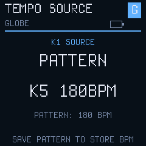
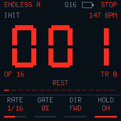
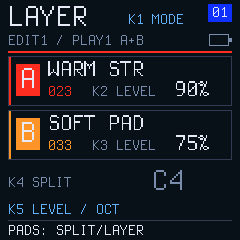
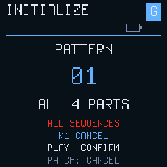

SMKSYNTH · PRO / ELITE · EXPERIMENTAL
Endless MIDI SU3
1.2.2-su3 · 19663 · Pacote de evolução sobre a DC3 dual-core aprovada.
Backup e restauração SU3 · Notas, limites e testes
Novidades da versão · SU3
Tempo: K5 em todas as telas do synth; BPM visível em Performance, Mixer, ARP e SEQ. Salve o BPM no pattern e escolha MASTER ou PATTERN em GLOBE → TEMPO SOURCE.
Correções: rodapé Split/Layer persistente; desenho completo do Endless; vozes em SUB/SUPER. INITIALIZE confirma, mostra NOT SAVED e retorna automaticamente à Performance.
Preserva o SUB aditivo aprovado, Mixer colorido, Master corrigido e arquitetura dual-core. No MODO MIDI, K5 continua configurável.
1 · Antes de começar
Somente para teclados que já usam SMKSYNTH. Exporte seu backup. Os pacotes de teste e de retorno preservam os dados salvos; não fazem instalação inicial pelo firmware M-VAVE.
Use Chrome ou Edge no computador. Feche DAWs, outros instaladores e aplicativos MIDI. Mantenha alimentação e cabo USB conectados; não mude de aba durante a gravação.
2 · Conecte e instale
Conferindo arquivos locais…
Nenhum dispositivo acessado.
Conecte para identificar o modelo.
Telas da SU3




Leia o fluxo e os limites dos testes.
Depois da instalação · Testes
GLOBE → TEMPO SOURCE: K1 escolhe MASTER/PATTERN. Salve um pattern a 100 BPM e outro a 140 BPM; teste a troca parado e tocando nos dois modos. Em Split/Layer, use < para LEVEL e > para OCT. No MODO MIDI, K5 continua configurável.
INITIALIZE: K1 escolhe o alvo; PLAY abre revisão; K1 seleciona INITIALIZE e PLAY confirma. PATCH cancela/sai. Salve explicitamente para manter. Teste também Single/Split/Layer, Mixer, Master, feedback REC e status Endless.
Carregue um timbre ANALOG e vá a PARA → OSC1 → OSC2 → SUB OSC. Aumente K3, escolha onda com K1 e oitava com K4. Teste acordes, bend, MONO/UNISON, Split/Layer e sequências com bateria.
GLOBE + SCALE mantém o diagnóstico DC3: compare o mesmo pattern por 30 segundos com SUB desligado e ligado. Não some os tempos dos núcleos, pois o trabalho acontece em paralelo.
Os novos patches são preservados no mesmo formato de 80 bytes. Use o backup desta página, pois o backup oficial não aceita a identidade SU3. Ao retornar à DC3/oficial, os novos parâmetros não são interpretados; restaure seu backup anterior caso queira o estado original dos timbres editados.
English quick guide
SU3 /19663: additive SUB without reducing OSC1/OSC2; revised Zoom Split/Layer with patch names, colored mixer, pad/Endless status and hold-REC feedback. K5 sets tempo on all synth pages; MIDI MODE keeps configurable K5. GLOBE TEMPO SOURCE: MASTER keeps current tempo, PATTERN recalls saved BPM. Save/copy patterns to store BPM; older patterns keep current tempo. Fixes keyboard footer, Endless redraw, SUB/SUPER voice meters and automatic INITIALIZE return.
GLOBE INITIALIZE: K1 target, PLAY review, K1 INITIALIZE then PLAY confirm; PATCH cancel/exit. Confirmation defaults to CANCEL. Initialization edits the working state; save explicitly to keep it. Full pattern: INIT on A/B/C, basic DRUM-X on D, equal levels, FX off, empty16step tracks and SINGLE rows.
Back up first. Chrome/Edge desktop, close other MIDI apps, keep USB connected and this tab active throughout flashing. Existing SMKSYNTH only. No official firmware or installer is replaced.
Problemas na instalação?
Preserve o log e use esta mesma página para retomar uma operação pendente. Não inicie outro procedimento sobre uma transferência incompleta. Esta página não instala nem restaura firmware M-VAVE V016.
Site oficial e orientações de recuperação · Notas e validação
Log